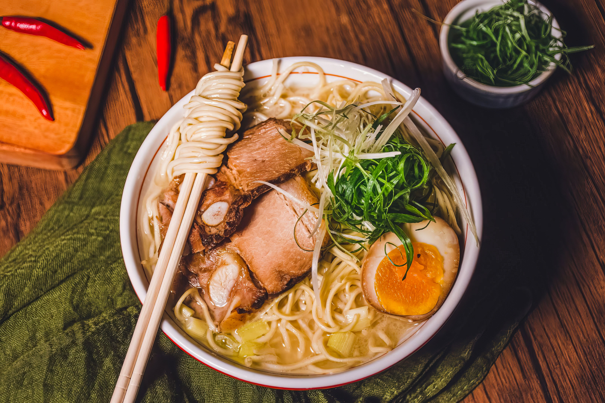

Tonkotsu Ramen

This recipe will show you how to get a proper rich and creamy tonkotsu
broth like so many ramen shops have. This recipe makes a beautiful broth
in 12 hours. Enjoy!
Ingredients
Tonkotsu Broth:
- 3 lbs (1361g) skin-on pigs trotters, or spine and neck bones
- 1 bunch green onions, cut crosswise into 3” (7.5cm) segments
- 2 medium shallots, quartered
- 1 large yellow onion, quartered
- 2 3” (7.5 cm) knobs fresh ginger, peeled and sliced
- 4 cloves garlic, peeled
Pork Chashu:
- 1 bunch green onions, cut crosswise into 2” (5cm) segments
-
1 2-3” (5-7.5 cm) knob fresh ginger, peeled and sliced into ¼” (6mm)
coins
- 4-5 cloves garlic, peeled
- ½ cup (118mL) sake
- ½ cup (118mL) Shaoxing cooking wine
- 2 lbs (907g) pork belly (skin on or off)
Soft-boiled Eggs:
Tare (Japanese seasoning sauce):
- 3 (2”/5cm) pieces kombu
- ¾ cup (177ml) water
- ½ cup (6g) bonito flakes
-
¼ cup (59mL) shiitake mushroom soaking water, optional but recommended
- Kosher salt, to taste
Assembly:
- Cooked ramen noodles
- Finely sliced green onion, light and dark green parts only
-
Dried shiitake mushrooms, rehydrated according to package instructions
- Soft-boiled eggs
- Enoki mushrooms
Steps
Tonkotsu Broth:
-
Into a large stock pot, add the trotters. Fill the pot with enough cold
water to cover by about 2” (5cm) above the bones. Bring to a boil over
medium-high heat and boil for 10 minutes. Using a fine mesh strainer,
occasionally skim the white foamy “scum,” floating on the surface of the
water and discard.
-
Strain the liquid in a colander, reserving the trotters. Rinse the
trotters with cold water. Return the trotters to the stock pot and once
again, add enough water to cover the trotters, this time by about 3”
(7.5cm), to allow for evaporation.
- Add the green onions, shallots, onion, ginger and garlic.
-
Bring to a rapid boil over high heat then reduce the heat to maintain
the boil at the lowest possible temperature without reaching a simmer.
Cover the pot and boil for 12 hours. (Constant boiling causes
emulsification in the broth which is how it becomes creamy and rich.)
During the 12 hours, intermittently add water as it evaporates and also
stir the pot to keep the pork from resting at the bottom of the pot and
burning.
-
After 12 hours, turn off the heat and strain the broth through a fine
mesh sieve, discarding the solids and keeping the liquid gold.
- Heat the broth to serve.
Pork Chashu:
- Preheat the oven to 300℉ (149℃).
-
In a heavy-bottom cast iron Dutch oven add the green onions, ginger,
garlic, sake, Shaoxing, mirin, soy sauce and water. Set aside.
-
Starting from the short side, roll the pork belly upward into a tight
log. Using 3 lengths of butcher’s twine, truss the pork belly on both
ends and in the middle, to hold the shape.
-
Put the pork belly into the Dutch oven with the aromatics and bring to a
boil. Reduce to a simmer, partially cover with a lid, and place in the
preheated oven to braise for 3-4 hours until tender, making sure to
rotate and baste the pork belly intermittently throughout the course of
the braise.
- Slice the chashu into ½” (12mm)-thick rounds.
Soft-boiled Eggs:
-
Bring a medium saucepan of water to a rolling boil over high heat.
- Carefully add the eggs into the boiling water.
- Reduce the heat to a gentle boil and cook for 6 ½ - 7 minutes.
-
Remove the soft-boiled eggs from the boiling water and immediately
submerge in a bowl of ice water. Cool to room temperature and peel to
remove the shells. Slice the eggs in half, to serve.
Tare:
-
For the dashi: Into a small saucepan add the kombu and water. Heat on
medium-low until just steaming. Do not boil. Turn off the heat, cover
and allow to steep for 10 minutes. Remove the lid, add the bonito flakes
and steep for 5 minutes. Strain the dashi into a medium bowl using a
fine mesh sieve.
-
Into the dashi, add the soy sauce, mirin, chashu braising liquid and
shiitake mushroom soaking water, if using. Season, to taste, with salt.
Assembly:
-
Into a serving bowl, add several spoonfuls of the tare to start; you can
add more, if needed.
-
Pour the heated tonkotsu broth into the serving bowl with the tare.
Taste to determine if more tare is necessary to season the broth.
- Add the cooked ramen noodles.
-
Add a couple slices of chashu on top of the noodles, along with the
halved soft-boiled egg.
-
Add sliced, rehydrated shiitake mushrooms and a handful of fresh enoki
mushrooms.
- Top with a generous handful of sliced green onions.
- Finish with a couple rectangles of nori.
Home